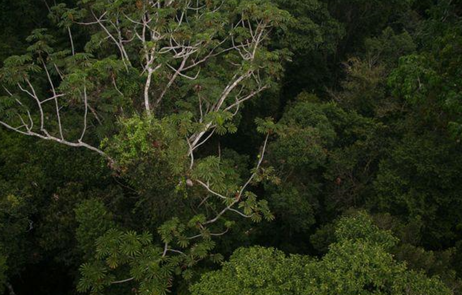
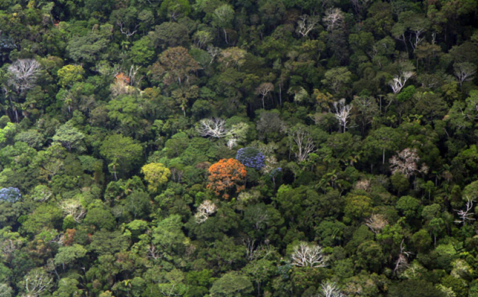
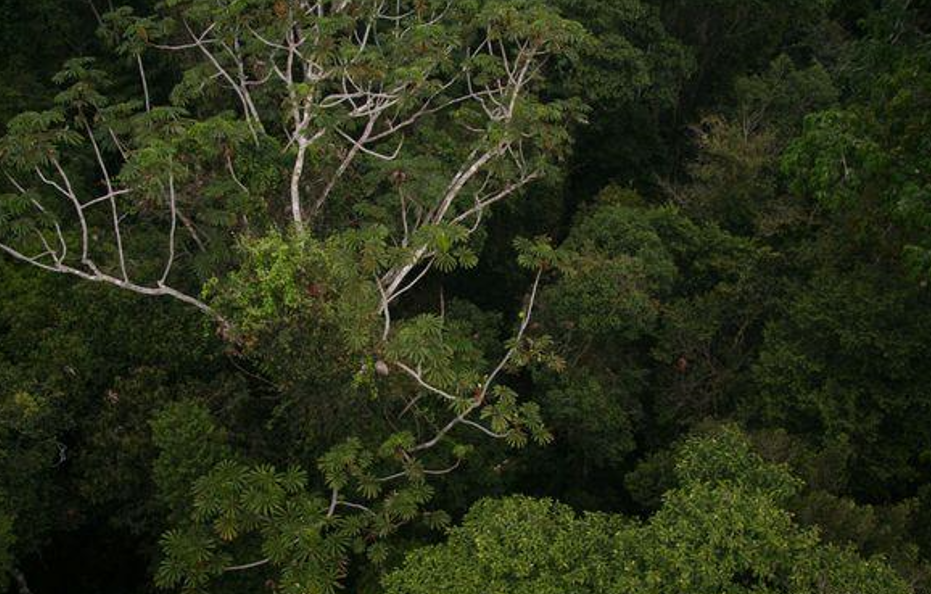
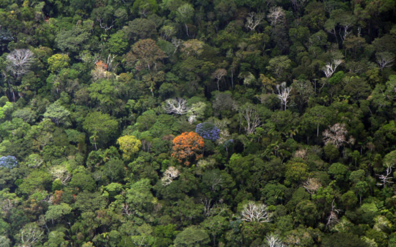

Este bioma presenta densos bosques con árboles de entre 15 a 40 m de altura, cuyas copas se unen en un dosel. Entre las especies arbóreas que existen se encuentran el cedro, la caoba y la caobilla, consideradas especies de maderas preciosas, además de otras especies como bromelias, orquídeas, lianas, plantas trepadoras y palo mulato.

 



Angel Esteban Tabardillo Briones
Dayann Gerardo Cordova Armendariz
Juan Pablo Ortiz Gonzales
Ivan Alberto Rodriguez Hernandez
Jose Rigoberto Martinez Peraza
303 Vespertino
Héctor Navarro Flores - Ecosistemas